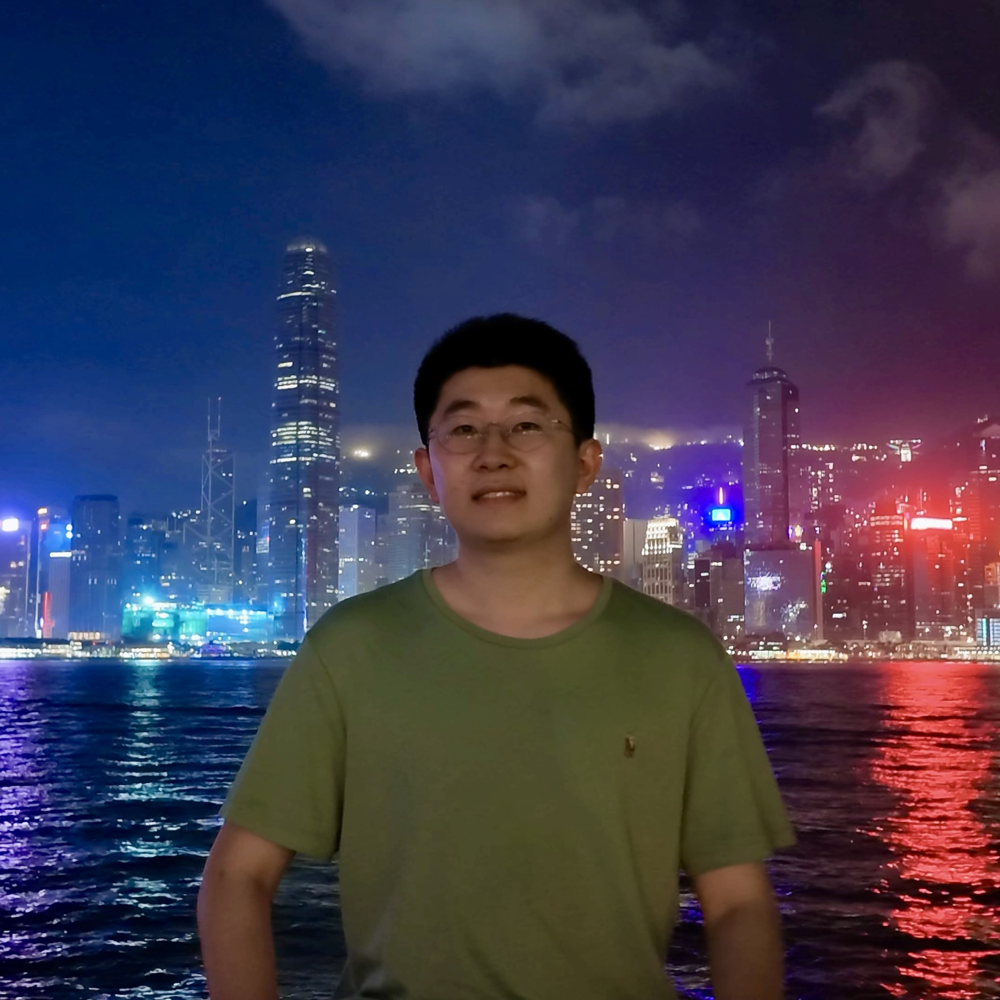

01
Agentic LLMs
General-purpose agentic LLMs, especially for office and productivity scenarios.
Researcher @ Xiaomi MiMo
I am a Researcher at Xiaomi MiMo. I received my Ph.D. degree in June 2026 from Institute of Computing Technology, Chinese Academy of Sciences (ICT/CAS), advised by Prof. Yang Feng. Before that, I received my B.E. degree in Computer Science and Technology from Beijing University of Posts and Telecommunications (BUPT) in Jun. 2021.

My research focuses on large language models and related areas. Currently, I am involved in building:
General-purpose agentic LLMs, especially for office and productivity scenarios.
Multimodal understanding models supporting image, video, and audio inputs.
I successfully defended my Ph.D. thesis, received my Ph.D. degree, and joined Xiaomi MiMo as a full-time researcher.
One paper is accepted to ACL 2026.
One paper is accepted to NeurIPS 2025.
One paper is accepted to ACL 2025.
Two papers are accepted to ICLR 2025.
Four papers are accepted to ACL 2024.
One paper is accepted to EMNLP 2023.
One paper is accepted to NeurIPS 2023.
Three papers are accepted to ACL 2023.
One paper is accepted to EMNLP 2022.
Two papers are accepted to ACL 2022.
Qingkai Fang, Shoutao Guo, Yang Feng.
Preprint
Yan Zhou, Qingkai Fang, Yun Hong, Yang Feng.
Findings of ACL 2026
Technical ReportContributor
Qingkai Fang, Yan Zhou, Shoutao Guo, Shaolei Zhang, Yang Feng.
Proceedings of ACL 2025 CCF-A
Qingkai Fang, Shoutao Guo, Yan Zhou, Zhengrui Ma, Shaolei Zhang, Yang Feng.
ICLR 2025 CCF-A
Shaolei Zhang, Qingkai Fang, Zhe Yang, Yang Feng.
ICLR 2025 CCF-A
Shoutao Guo, Shaolei Zhang, Qingkai Fang, Zhengrui Ma, Min Zhang, Yang Feng.
NeurIPS 2025 CCF-A
Technical ReportCore Contributor
Technical ReportContributor
Technical ReportContributor
Qingkai Fang, Shaolei Zhang, Zhengrui Ma, Min Zhang, Yang Feng.
Proceedings of ACL 2024 CCF-A
Qingkai Fang, Zhengrui Ma, Yan Zhou, Min Zhang, Yang Feng.
Findings of ACL 2024
Shaolei Zhang, Qingkai Fang, Shoutao Guo, Zhengrui Ma, Min Zhang, Yang Feng.
Proceedings of ACL 2024 CCF-A
Zhengrui Ma, Qingkai Fang, Shaolei Zhang, Shoutao Guo, Yang Feng, Min Zhang.
Proceedings of ACL 2024 CCF-A
Shaolei Zhang, Kehao Zhang, Qingkai Fang, Shoutao Guo, Yan Zhou, Xiaodong Liu, Yang Feng.
Preprint
Qingkai Fang, Yan Zhou, Yang Feng.
NeurIPS 2023 CCF-A
Qingkai Fang, Yang Feng.
Proceedings of ACL 2023 CCF-A
Qingkai Fang, Yang Feng.
Proceedings of ACL 2023 CCF-A
Yan Zhou, Qingkai Fang, Yang Feng.
Proceedings of ACL 2023 CCF-A
Wenyu Guo, Qingkai Fang, Dong Yu, Yang Feng.
Proceedings of EMNLP 2023 CCF-B
Shaolei Zhang, Qingkai Fang, Zhuocheng Zhang, Zhengrui Ma, Yan Zhou, Langlin Huang, Mengyu Bu, Shangtong Gui, Yunji Chen, Xilin Chen, Yang Feng.
Preprint
Qingkai Fang, Rong Ye, Lei Li, Yang Feng, Mingxuan Wang.
Proceedings of ACL 2022 CCF-A
Qingkai Fang, Yang Feng.
Proceedings of ACL 2022 CCF-A
Zhe Yang, Qingkai Fang, Yang Feng.
Proceedings of EMNLP 2022 CCF-B